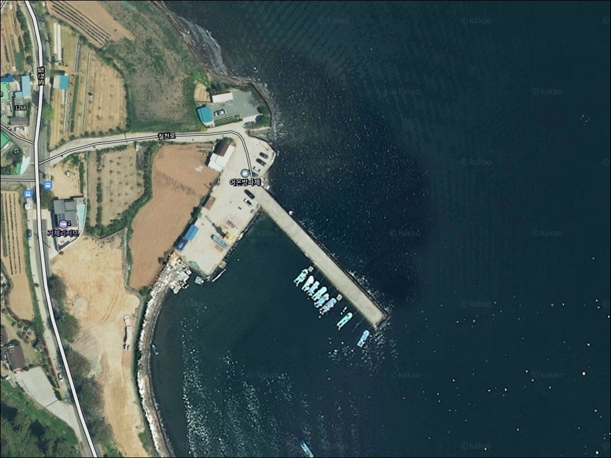
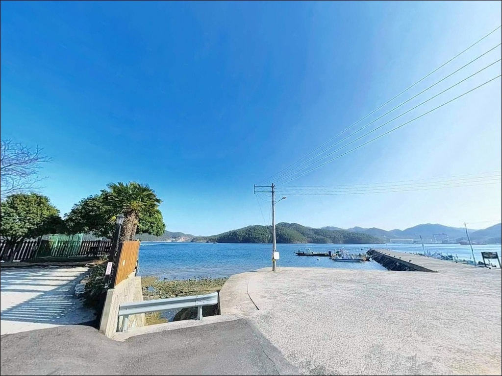
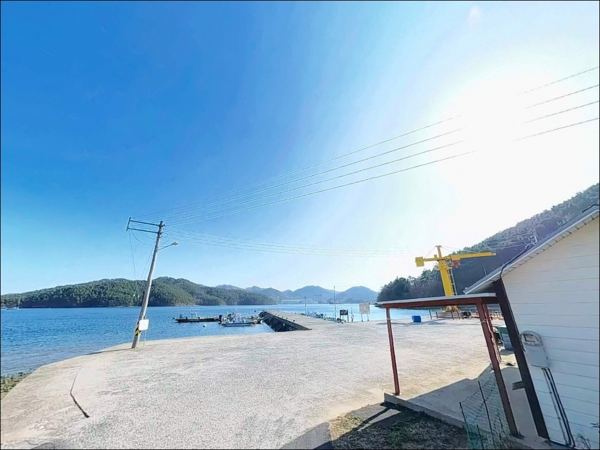
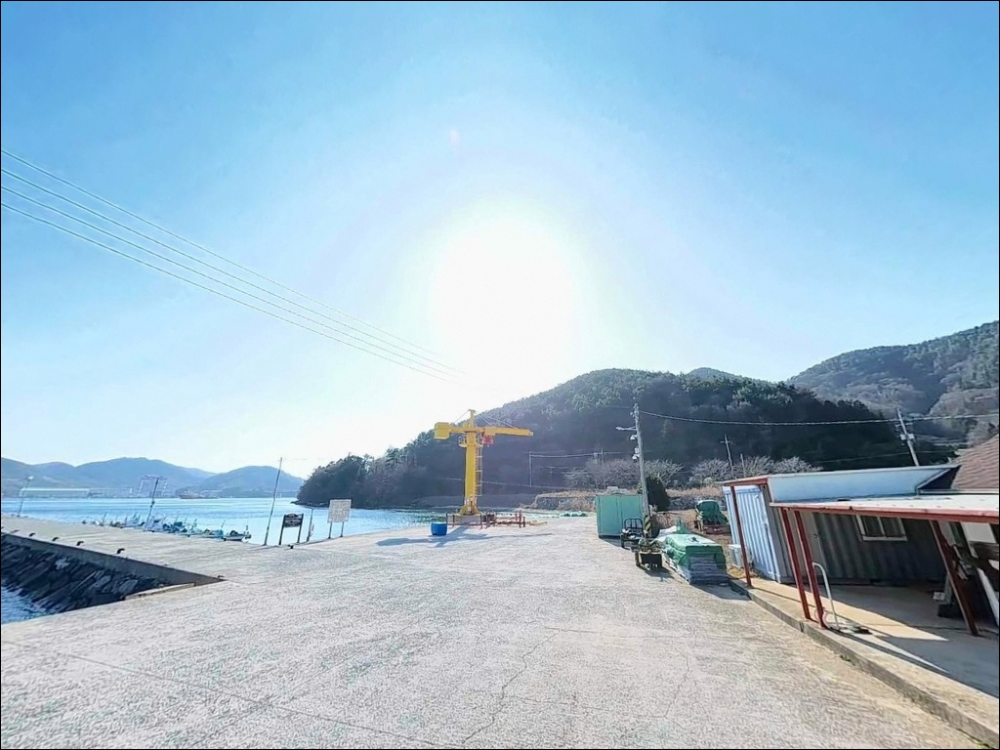
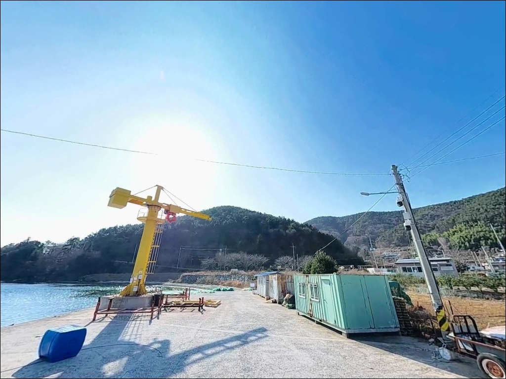
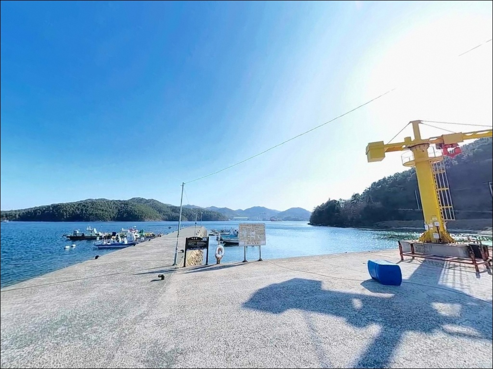
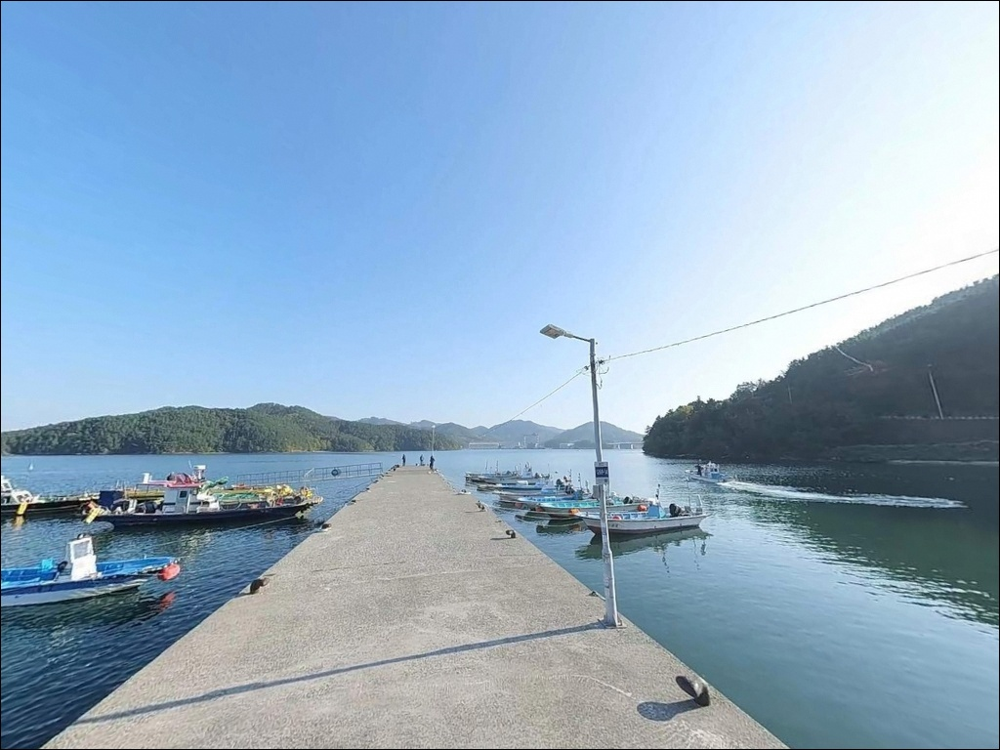
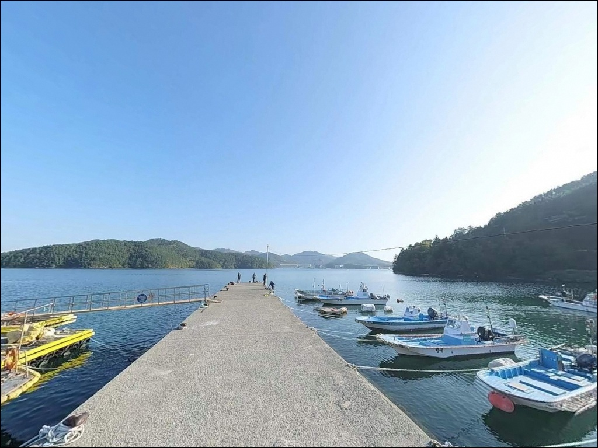
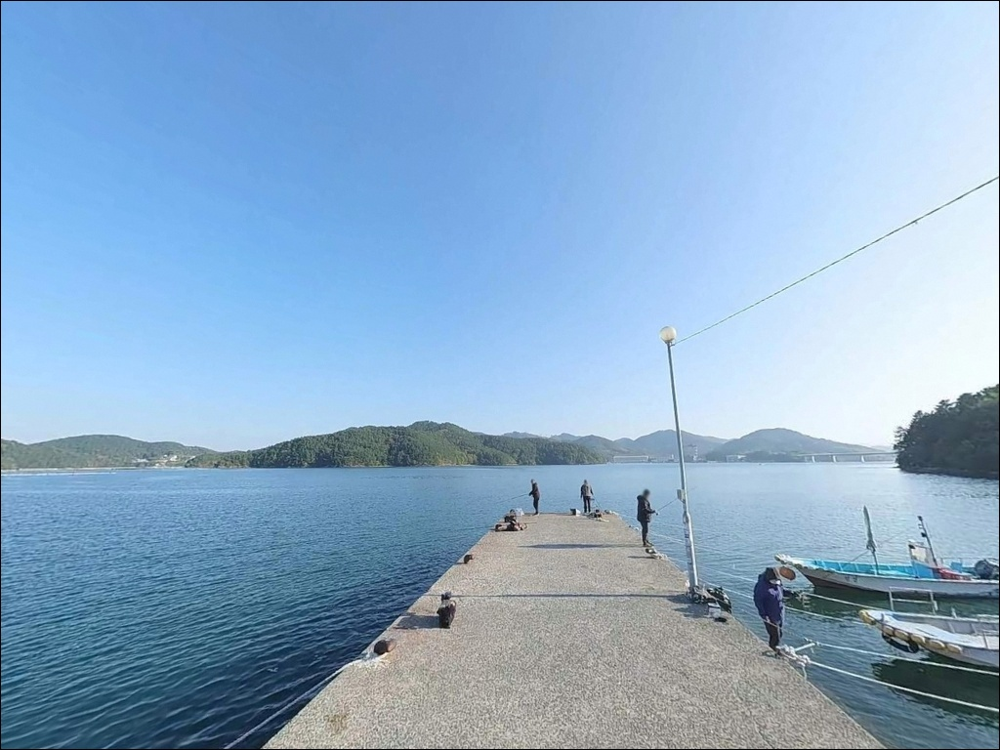

이 페이지에는 광고(제휴 링크 포함)가 있으며, 광고 링크를 통해 구매하면 운영자가 판매 수익 또는 수수료를 받을 수 있습니다. 포인트 사진: 카카오맵 스카이뷰·로드뷰. 이 페이지의 지도·사진 이미지는 카카오맵의 실제 서비스 이미지와 다를 수 있습니다.

어온방파제
경남 거제시 하청면 어온리 359-1
칠천도는 육지와 연결된 섬이지만,
섬 안에 낚시 전문점이 없습니다.
채비와 미끼를 현지에서 구할 수 없어
준비 없이 들어가면 방파제 앞에서
로드만 들고 서는 상황이 됩니다.
칠천교를 건너기 전에 완비하는 것이
이 포인트 방문의 첫 번째 조건입니다.
어온방파제는 칠천도 북동쪽,
칠천량 해협이 좁아지는 구간에 자리한
어촌정주어항 방파제입니다.
'ㄱ'자로 꺾인 방파제 구조 덕분에
외항 끝단에서 해협 수로를 직접 공략할 수 있고,
야간 볼락 루어와 갑오징어 에깅까지
복수 방식 운영이 가능한 포인트입니다.
이 글은 어온방파제의
진입 환경, 차박 여건, 낚시 지형 조건,
방식별 공략 타이밍에 집중합니다.
조황 단정이나 특정 어종 보장은
이 글의 범위에 포함되지 않습니다.

칠천대교를 건너 칠천도로 진입한 뒤
섬 내 해안도로(칠천로)를 따라
어온리 방향으로 이동하면 방파제까지
포장도로가 이어집니다.
경사 구간이 없고 도로 상태가 양호해
대형 캠핑카를 포함한 모든 차종의
진입이 가능합니다.
칠천도 내부 도로는 구간에 따라
왕복 1차로~1.5차로 수준의
시골 해안도로 폭이 유지됩니다.
방파제 초입은 진입로 자체가 넓어
회차 공간이 확보되며,
마을 사거리에서도 방향 전환이 가능합니다.
주차는 방파제와 연결된
넓은 물량장(공터)을 주차 1순위로 잡습니다.
수십 대 수용이 가능한 공간이라
주말 나들이 출조에도 자리 걱정 없이
차량을 바다 방향으로 정차할 수 있습니다.
어선 상하가 슬로프는 비워두는 것이
기본 매너입니다.

방파제 물량장은 차량을 바다 방향으로 세우고
트렁크를 열어 낚시와 취침을 함께 즐기기에
구조적으로 이상적인 차박 공간입니다.
항만 가로등이 밝게 유지되어
야간 조과 확인과 차박 취침 중 보안성이
모두 양호한 편입니다.
어온리 마을은 민가가 해안 주변에
산재한 형태로,
완전한 고립형 분위기는 아닙니다.
마을 쪽 조명과 방파제 가로등이 함께 있어
야간에도 밝은 편이며,
민가 밀집도가 낮아
소음 마찰 없이 조용히 체류하기 좋습니다.
칠천량 해협을 직접 마주하는 구조여서
남서풍 계열 바람이 강한 날은
외항 쪽으로 바람이 올라오는 경우가 있습니다.
겨울철 야박 시 방풍 대비와
기상청 해상예보 확인이
체류 성패를 가르는 조건입니다.

칠천도 섬 안에는 낚시 전문점이 없습니다.
어온방파제를 포함해 칠천도 내 어느 포인트에서도
채비와 미끼를 현지에서 구할 수 없어
칠천교를 건너기 전 준비를 마치는 것이
이 권역의 절대 원칙입니다.
반경 약 1.5km 거리에는
GS25 거제하청점이 위치하며,
칠천도 내에도 세븐일레븐 거제칠천도점이
차로 5분 거리에 있습니다.
간식·음료·간편식 수준의 보충은
섬 안에서도 가능하지만,
낚시 소품·밑밥·생미끼는 반드시
본섬 방면 낚시점에서 미리 해결해야 합니다.
반경 3km 이내에는
칠천량해전공원과 물안해수욕장이 있어
동행자와 함께하는 가족 출조 시
오전 시간대를 자연·역사 탐방으로
활용하는 동선도 가능합니다.

어온방파제 방문에서 가장 먼저
확인해야 할 것은 물때입니다.
칠천량 해협은 들물·썰물 전환 전후
조류 흐름 변화가 뚜렷한 구간입니다.
바다타임에서 하청면 기준 물때를 확인하고
조류가 살아나는 들물 초·중반에
맞춰 입장하는 것이 효과적입니다.
기상 변화에도 빠르게 영향을 받는
해협 직면 방파제 특성상
당일 기상청 경남 남해안 해상예보를
출발 전에 반드시 확인합니다.
외항 테트라포드 구간은 파도가 없어도
발판이 불규칙하고 미끄러울 수 있으니
미끄럼 방지 신발과 구명조끼는
필수 장비입니다.
칠천도는 섬 규모가 작아
쓰레기를 처리할 시설이 제한적입니다.
출조 중 발생한 밑밥 잔여물과 쓰레기는
전량 가지고 나오는 것이
이 해역을 유지하는 기본 매너입니다.
야간 단독 진입보다 동행자와 함께하는 편이
안전합니다.

어온방파제의 핵심은
칠천량 해협 수로를 직접 마주하는
'ㄱ'자 꺾임 구조입니다.
방파제 끝단 외항은 해협 수로와
가장 가까운 자리로,
들물·썰물 전환 전후 조류 흐름이
가장 뚜렷하게 살아나는 구간이 이 자리입니다.
외항 끝단 수심은 6~8m 내외를 유지하며,
바닥은 사질과 수중여가 섞인 구조입니다.
방파제 외항 쪽으로는 테트라포드가 쌓여 있고
내항은 콘크리트 석축으로 구성되어
발판이 편한 편입니다.
테트라포드와 석축의 경계 접합부는
볼락과 노래미가 몸을 숨기기 좋은 지형으로,
루어 탐색 자리로 잘 맞습니다.
이 포인트 지형에서 기대해 볼 수 있는 어종은
볼락·감성돔·갑오징어·호래기·도다리·
보리멸·붕장어·전갱이이며,
봄은 감성돔·농어, 여름~가을은
갑오징어·전갱이·무늬오징어,
겨울은 볼락·학꽁치 패턴이
이 해역 전체에서 확인됩니다.
출조 전에 칠천도 또는 하청면 일대
최신 조황을 꼭 검색해 보시기 바랍니다.

이 포인트에서 가장 잘 맞는 낚시는
볼락 루어입니다.
방파제 가로등 불빛 아래에서
먹이 활동이 활발해지는 야간 타이밍에
보안등 주변과 테트라 경계 구간을
소형 지그헤드로 천천히 훑는 방식이
이 포인트 구조와 가장 잘 맞습니다.
특히 해가 진 직후 2시간 이내가
볼락 입질이 집중되는 타이밍입니다.
에깅도 이 포인트에서 충분히 노려볼 수 있습니다.
방파제 가로등 집광 구간에서
갑오징어와 호래기를 대상으로
야간 에깅을 운영하는 방식이
가을철 이 일대에서 일반적입니다.
에깅이란 갑오징어·무늬오징어를 대상으로
에기(인조 미끼)를 사용하는 루어낚시 방식입니다.
찌낚시는 외항 테트라포드 라인을
반유동 채비로 7m 수심층을
일정하게 고정해 운영하면
감성돔·벵에돔을 기대할 수 있는 구조입니다.
원투낚시는 내항 물량장 방향으로
청갯지렁이 미끼를 사용해
도다리·보리멸·붕장어를 노리는 방식이
칠천도 전역에서 활용됩니다.

어온방파제에 자리가 없거나
조류 조건이 기대에 못 미칠 때는
칠천도 장안마을 방파제(크루즈 방파제)가
가장 가까운 대안입니다.
어온방파제에서 약 2km 거리이며,
일자형 석축 방파제와 ㄱ자 방파제
두 곳을 함께 공략할 수 있어
인원이 많아도 자리 여유가 있습니다.
칠천도 서남쪽의 연구항 방파제는
어온방파제에서 약 4km 거리로,
서쪽 끝단 모퉁이가 감성돔 포인트로
알려진 곳입니다.
찌낚시 시즌에 어온방파제와 병행하는
당일 이동 플랜 B로 활용하기 적합합니다.
차박 대체지로는
칠천도 연구리 일대 방파제가
입구 공터가 넓어 차박 이용자가
꾸준히 찾는 지점입니다.
물안해수욕장 주차장도
어온방파제에서 약 3km 거리로,
화장실 이용이 편리하고 개방감이 좋은
차박 대안입니다.

야간 볼락 루어를 즐기는 낚시인이라면
어온방파제의 구조는 잘 맞습니다.
넓은 물량장과 방파제 가로등,
해협 수로를 직접 마주하는 외항 구조가
볼락·갑오징어·감성돔까지
복수 방식으로 운영 가능한 여건을
갖추고 있습니다.
반면 사전 채비 없이 도착하거나
해협 직면 구조를 감안하지 않고
강한 바람 예보에도 방문하면
낚시 자체가 불편해지는 상황이 생깁니다.
칠천교 건너기 전 채비 완비,
해상예보 확인, 물때 타이밍 계산,
이 세 가지를 챙기고 간다면
기억에 남는 출조가 될 수 있는 포인트입니다.
낚시 후 물량장에 차를 세우고
칠천량 해협의 야경을 바라보며
하룻밤 머무는 차박 여행자라면,
방풍 준비만 충분히 갖춰두면
조용하고 여유 있는 밤을
보낼 수 있는 곳입니다.